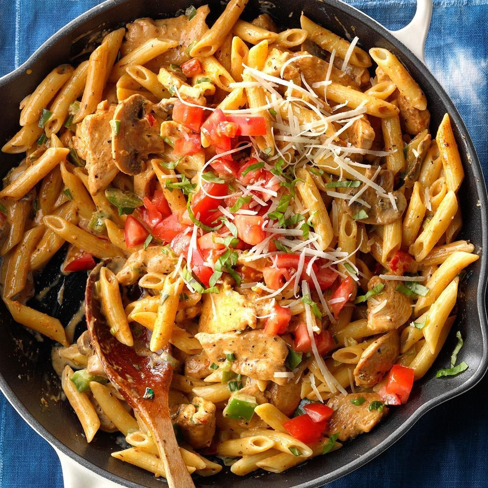

Cajun Chicken Pasta
What is Cajun Chicken Pasta?
Cajun Chicken Pasta is a popular dish that originated in the southern United States. It is a flavorful and spicy pasta dish that is perfect for those who love bold flavors.
Ingredients
Pasta (linguine, angel hair, fettuccine, elbow, macaroni, penne, bow tie pasta)
Chicken breasts or thighs
Cajun seasoning
Salt and pepper
Garlic
Butter
Heavy whipping cream
Parmesan cheese
Diced tomatoes
Instructions / How to Cook
1. Cook the pasta in a pot of salted water until al dente.
2. Season the chicken with cajun seasoning and saute it in a skillet with oil until fully cooked, then slice into strips.
3. In a deep skillet, saute the garlic in butter until fragrant. Add the diced tomatoes and saute for about 2 minutes.
4. Add the cream, remaining cajun seasoning, and parmesan cheese and bring to a simmer.
5. Add the pasta and sliced chicken to the sauce and toss to combine.
6. Top with parmesan and parsley to serve.